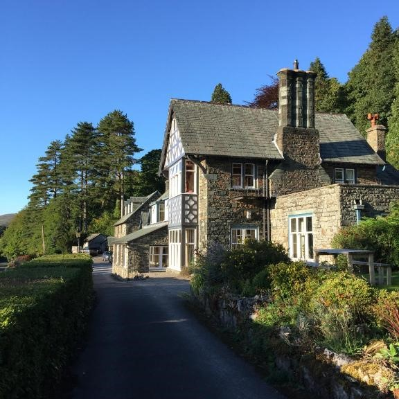
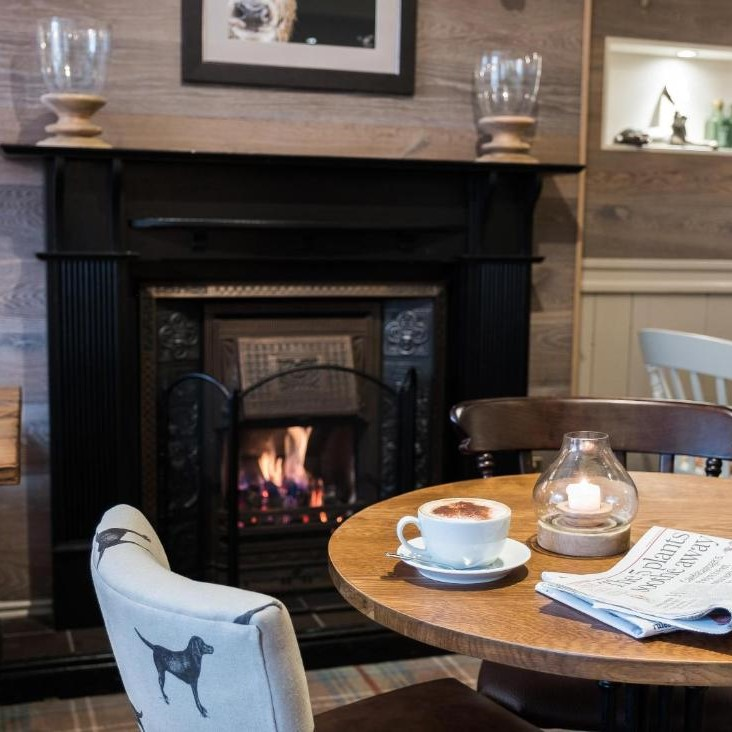

SIGHTS

{kind=link}
{kind=link}
ACCOMMODATION
Ravenstone Manor
A 5-minute drive from Bassenthwaite Lake, Ravenstone Manor is an 19th-century manor house set in 3 hectares of ground. The property is at the foot of Skiddaw, overlooking Bassenthwaite Lake. It offers stone walls and en suite bathrooms. The property's dining room mixes traditional and modern dishes based on locally sourced products. Dishes feature Cumbrian game and locally caught fish. The bar has an open fire, and the lounge has a warming fire and stunning views through the picture windows. Ravenstone Manor is a 10-minute drive from Keswick and Derwent Water and 30 minutes from Penrith and the M6 motorway. Guests can go walking around the Northern Lakes, hiking and biking in the area. Couples particularly like the location — they rated it 9.4 for a two-person trip. We speak your language!
Royal Oak
The 18th-century Royal Oak at Keswick is located in the market town of Keswick, just 2 miles from Derwentwater. A traditional pub, it offers home-cooked seasonal food, cask ales and cosy en suite accommodation. The Royal Oak at Keswick has elegant en suite rooms with either a power shower or bath. Each room has an LCD TV, facilities for making tea and coffee, and free Wi-Fi. In the restaurant, you can enjoy freshly prepared dishes made with local produce and seasonal ingredients from Cumbria. The bar stocks real ales from the Thwaites Brewery. With stunning views of the surrounding hills, the former coaching inn is close to the town centre. Keswick Lodge is a perfect base to explore the Lake District. The wholesome, fresh Cumbrian breakfasts gained a Highly Commended accolade in Britain's Best Pub Cooked Breakfast 2009.
LOCATION
The heart of Keswick is the Market Square, ringed round with shops and hotels. There are no cars in the pedestrianised area which makes for a very pleasant shopping experience. The main building in the centre of the Market Square is The Moot Hall, an ancient foundation home to the Lake District National Park Tourist Information Centre and an excellent starting point for planning your adventures during your stay. It was built in 1813 on the site of an earlier building. It was used in the past as a covered market, a courthouse, Town Hall, a place of worship, a museum and a prison. Its one-handed clock strikes the hour only.